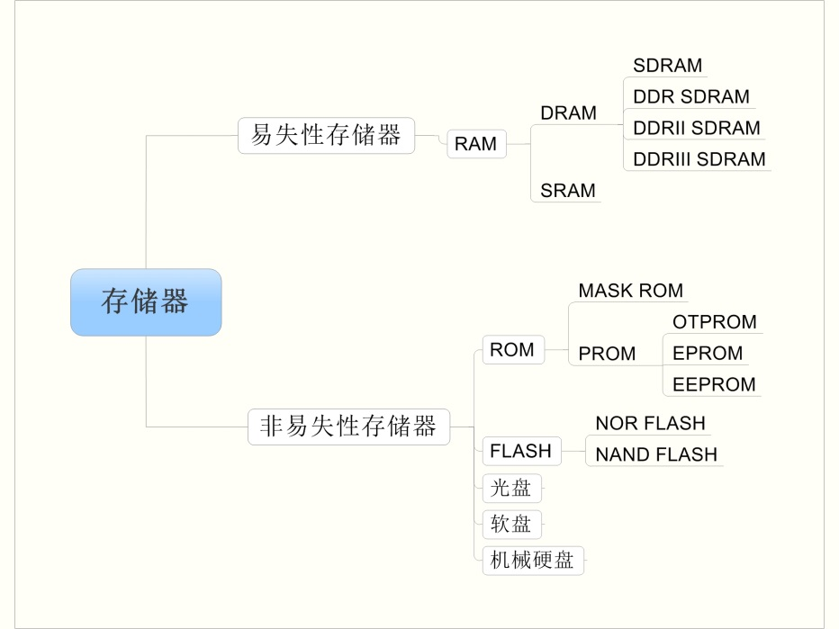

<!DOCTYPE lake>
<h1 data-lake-id="qIcQH" id="qIcQH"><span data-lake-id="u2ce031e5" id="u2ce031e5">存储器分类</span></h1><p data-lake-id="u7490471e" id="u7490471e"><span data-lake-id="u500b099f" id="u500b099f">存储器按其存储介质特性主要分为“易失性存储器”和“非易失性存储器”两大类。</span></p><p data-lake-id="ud53df218" id="ud53df218"><span data-lake-id="u2dfc6b36" id="u2dfc6b36">“易失/非易失”是指存储器断电后， 它存储的数据内容是否会丢失的特性。</span></p><p data-lake-id="uf5812270" id="uf5812270"><span data-lake-id="u5a65a5c5" id="u5a65a5c5">在计算机中易失性存储器最典型的代表是内存，非易失性存储器的代表则是硬盘。</span></p><p data-lake-id="u8b9cdff1" id="u8b9cdff1"></p><h1 data-lake-id="bRyVg" id="bRyVg"><span data-lake-id="ua1ab61e4" id="ua1ab61e4">RAM</span></h1><blockquote data-lake-id="u95648102" id="u95648102"><p data-lake-id="u78edff18" id="u78edff18"><span data-lake-id="ucc245c0a" id="ucc245c0a">Random access memory</span></p></blockquote><p data-lake-id="u9349f7e5" id="u9349f7e5"><span class="lake-fontsize-12" data-lake-id="u12b94d16" id="u12b94d16" style="color: rgb(77, 77, 77)">随机存取存储器，缩写：RAM，也叫主存，是与CPU直接交换数据的内部存储器。它可以随时读写，而且速度很快，通常作为操作系统或其他正在运行中的程序的临时数据存储介质。</span></p><h1 data-lake-id="xmHEQ" id="xmHEQ"><span data-lake-id="u208bd399" id="u208bd399">ROM</span></h1><blockquote data-lake-id="u85fe12d1" id="u85fe12d1"><p data-lake-id="ufe815cd1" id="ufe815cd1"><span class="lake-fontsize-12" data-lake-id="u800b9f2a" id="u800b9f2a" style="color: rgb(16, 18, 20)">read only memory</span></p></blockquote><p data-lake-id="u8d082b0c" id="u8d082b0c"><span class="lake-fontsize-12" data-lake-id="u51da05a5" id="u51da05a5">只读存储器以非破坏性读出方式工作，只能读出无法写入信息。信息一旦写入后就固定下来，即使切断电源，信息也不会丢失，所以又称为固定存储器。现在的ROM包括闪存就是U盘，包括固态硬盘等，都是可写入的。ROM已经不是只读的了。</span></p><h2 data-lake-id="HZ9XG" id="HZ9XG"><span class="lake-fontsize-12" data-lake-id="ud26ebada" id="ud26ebada">EEPROM</span></h2><blockquote data-lake-id="u419270c9" id="u419270c9"><p data-lake-id="u2d6f84ef" id="u2d6f84ef"><span class="lake-fontsize-12" data-lake-id="u520c1497" id="u520c1497">EEPROM(Electrically Erasable Programmable Read-Only Memory)是电可擦可编程只读存储器的缩写。</span></p></blockquote><ul list="ua430340d"><li data-lake-id="u3f9ec288" fid="uda61075d" id="u3f9ec288"><span class="lake-fontsize-12" data-lake-id="u5b921197" id="u5b921197">可以随机访问和修改任何一个字节,可以往每个bit位中写入0或1</span></li><li data-lake-id="ufbaca39f" fid="uda61075d" id="ufbaca39f"><span class="lake-fontsize-12" data-lake-id="uede28304" id="uede28304">掉电后数据不丢失,可以保存100年,擦写100万次</span></li><li data-lake-id="uf2a90ec8" fid="uda61075d" id="uf2a90ec8"><span class="lake-fontsize-12" data-lake-id="u2d4db7e0" id="u2d4db7e0">高可靠性,但芯片构成电路复杂、成本高,因此容量都很小</span></li></ul><h2 data-lake-id="jm5fb" id="jm5fb"><span data-lake-id="u372bca61" id="u372bca61">Flash</span></h2><p data-lake-id="u45b17541" id="u45b17541"><span class="lake-fontsize-12" data-lake-id="ue09fb30f" id="ue09fb30f">FLASH存储器又称闪存，它结合了ROM和RAM的长处，不仅具备电子可擦除可编程（这是EEPROM的优点）的性能，还不会断电丢失数据（这是EEPROM的优点），同时可以快速读取数据（这是RAM的优点）。</span></p><p data-lake-id="u97794e4d" id="u97794e4d"><span class="lake-fontsize-12" data-lake-id="u747fcde9" id="u747fcde9">FLASH分为</span><strong><span class="lake-fontsize-12" data-lake-id="ue6ab751d" id="ue6ab751d">NOR FLASH</span></strong><span class="lake-fontsize-12" data-lake-id="uf105e141" id="uf105e141"> 和 </span><strong><span class="lake-fontsize-12" data-lake-id="uf5564a9d" id="uf5564a9d">NAND FLASH</span></strong><span class="lake-fontsize-12" data-lake-id="u9db3c4c9" id="u9db3c4c9"> 两种</span></p><ul list="u24d350f3"><li data-lake-id="ucefbcda5" fid="uad155503" id="ucefbcda5"><span class="lake-fontsize-12" data-lake-id="u19e663c4" id="u19e663c4">相较eeprom,擦除不再以字节为单位,而是以块为单位,简化了电路,降低了成本</span></li><li data-lake-id="u3bc1c9bd" fid="uad155503" id="u3bc1c9bd"><span class="lake-fontsize-12" data-lake-id="uece124c4" id="uece124c4">NOR FLASH,芯片内部数据线和地址线分开,可以实现RAM一样的随机寻址功能,读取任意一个字节,擦除仍需按块擦除</span></li><li data-lake-id="u61f27c6e" fid="uad155503" id="u61f27c6e"><span class="lake-fontsize-12" data-lake-id="u4b043e71" id="u4b043e71">NAND FLASH,同样按块擦除,但数据线和地址线复用,不能随机寻址。按页读取</span></li><li data-lake-id="u0f3f63d0" fid="uad155503" id="u0f3f63d0"><span class="lake-fontsize-12" data-lake-id="u13b34eb2" id="u13b34eb2">NAND FLASH引脚复用,读取速度比NOR FLASH慢,但擦除和写入速度比NOR FLASH快</span></li><li data-lake-id="u7d5ad6ea" fid="uad155503" id="u7d5ad6ea"><span class="lake-fontsize-12" data-lake-id="u23a1942e" id="u23a1942e">NAND FLASH内部电路更简单,因此数据密度大,体积小,成本低</span></li><li data-lake-id="uf2a63be2" fid="uad155503" id="uf2a63be2"><span class="lake-fontsize-12" data-lake-id="uadcc3068" id="uadcc3068">NOR FLASH可以按照字节寻址,所以程序可以在NOR FlASH中运行</span></li></ul><p data-lake-id="uc26cf257" id="uc26cf257"><span class="lake-fontsize-12" data-lake-id="u7f8159e7" id="u7f8159e7">​</span><br/></p><p data-lake-id="u8a5d66d2" id="u8a5d66d2"><br/></p><h1 data-lake-id="UNUae" id="UNUae"><br/></h1><p data-lake-id="u37b26af8" id="u37b26af8"><br/></p><p data-lake-id="ue446bdd3" id="ue446bdd3"><span data-lake-id="u9d47bbeb" id="u9d47bbeb">​</span><br/></p><p data-lake-id="ubc76c7ff" id="ubc76c7ff"><span class="lake-fontsize-12" data-lake-id="u81a5ee10" id="u81a5ee10" style="color: rgb(0,0,0)">​</span><br/></p><p data-lake-id="u9a6a3966" id="u9a6a3966"><span data-lake-id="u09e274fc" id="u09e274fc">​</span><br/></p>